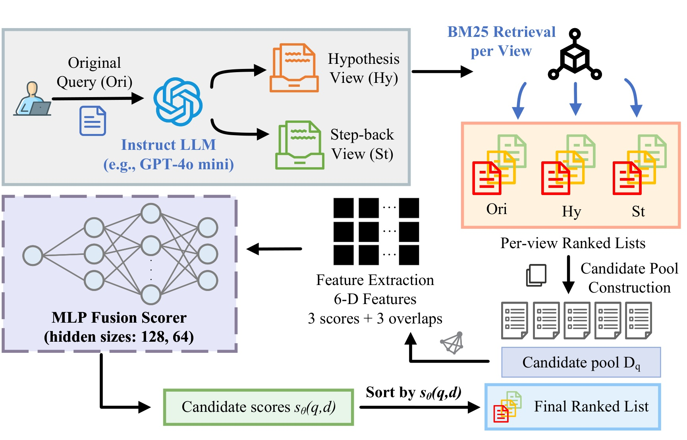
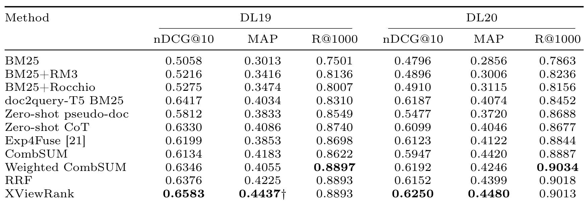
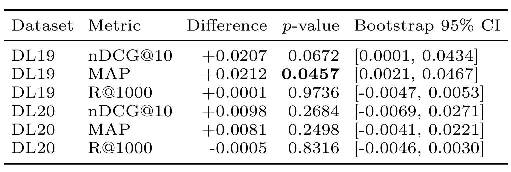
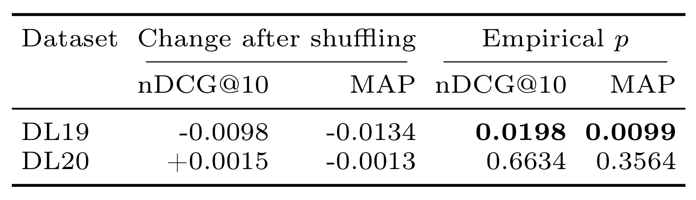
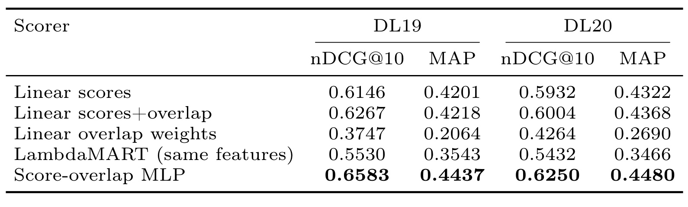
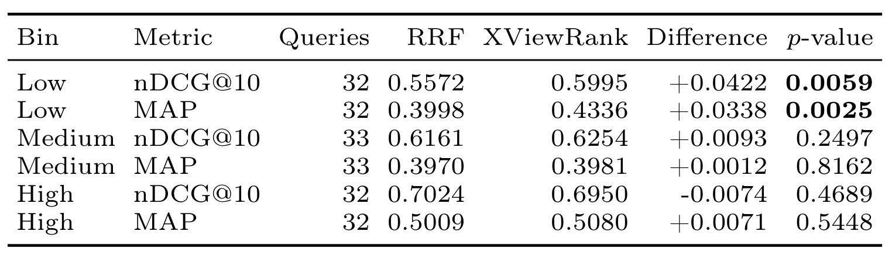
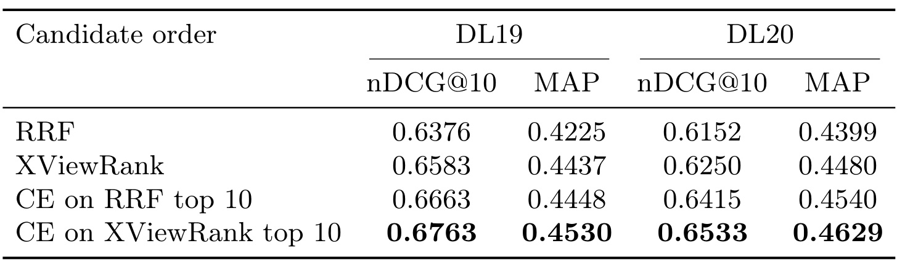

XViewRank：让视图重叠决定稀疏检索分数如何融合
- 论文：XViewRank: Overlap-Conditioned Score Fusion for LLM-Augmented Sparse Retrieval
- 作者：Xinxuan Lv、Minghan Li、Guodong Zhou；机构：苏州大学计算机科学与技术学院。
- 首次公开：2026-10-14；精读日期：2026-10-16（Asia/Shanghai）。
- 论文入口：arXiv:2610.20122。
- 代码/项目页状态：未核验到独立代码或项目页；论文承诺释放缓存视图、数据划分和评测脚本，不等于本轮已获得。
- 核验范围：原始 PDF 全部20页，含附录A/B；下述实验均为作者报告，本轮未独立运行或复现。
论文要解决的问题：大模型为一个问题生成假设答案式视图和后退抽象式视图后，三路BM25结果可能互补，也可能重复或偏离意图。固定分数相加或固定排名融合难以区分这些情况。XViewRank保留三路归一化分数，再把三对结果集合的重叠度作为查询级条件，通过小型非线性网络调整各路证据的解释方式；核心问题是同样的视图、同样的候选池能否融合得更好。
1. 背景和问题
1.1 查询扩展之后，仍然存在一个融合问题
稀疏检索的优势来自成熟的倒排索引：查询词命中文档词项，词项统计决定候选分数，执行速度和结果来源都容易分析。然而用户通常只写很短的问题，相关段落使用的术语、机制描述和上下文未必出现在原始查询里。大语言模型可以在查询一侧补齐这些词汇。给定一个信息需求，先生成可能回答它的简短段落，再生成概括其上层概念的检索问题，两种表述往往能触发不同的倒排表。这种扩展无需重新训练整个文档索引，但它把一个检索列表变成了多个列表，后续如何合并就成为独立问题。
假设答案式视图的长处是提供具体词汇。例如询问某个现象的原因时，它可能写出专业术语、可能的作用路径和相关实体。后退式视图更接近抽象：去掉问题中过窄的措辞，回到基础概念或机制。两者不保证正确。假设段落可能把未经证实的答案写进去，后退查询可能宽到失去用户约束。如果把生成文本直接拼接到原查询里，BM25只看到混合词袋，系统便无法分辨哪个视图带来某个候选。若后续效果退化，诊断也难以追溯到具体信息来源。
XViewRank关注的是生成之后的证据利用。原查询、假设视图、后退视图分别搜索同一段落索引，候选按文档标识去重。在这个阶段，系统已经获得三个来源清晰的排序列表，但还没有决定最后的排名。某个候选可能在原查询中很强，却只在另一视图尾部出现；另一个候选可能只被假设视图命中。直接使用统一权重，隐含了所有查询中三路信息可靠性相近的假设，而实际查询之间的列表相似度会发生明显变化。
1.2 固定融合缺少什么上下文
经典RRF把各路的名次变成倒数后求和，因此不要求各路BM25原始分数处于同一尺度。它具有很强的实用性：即使查询长短不同导致分值不可比，名次仍然能作为共同语言。代价是分值幅度被压缩掉，同样是第一名，分数远超第二名与仅略高于第二名的区别不会充分保留。归一化后做CombSUM能保留部分幅度信息，但固定权重仍然无法根据当前查询的视图关系调整解释。开发集调权重可以找到总体合适的平均方案，却未必能解决每个查询的具体情况。
本文的直觉是，候选分数应放在“这几路列表本来有多相似”的背景下阅读。当三路结果高度重叠时，多路支持可能只是在重复同一批词汇证据；当结果重叠很低时，某一路独有的高分候选可能为系统提供补充线索。这并不意味着独有候选一定更相关。列表不一致同样可能来自生成漂移，论文因此只把重叠视为条件上下文，并没有把它当作相关性的标签。这个区分决定了模型的能力边界：它能学习统计上如何利用异质证据，但没有直接阅读文本来判断生成内容是否忠实。
更容易被忽略的是一个数学约束。列表重叠是查询级特征，对同一查询的所有候选都完全一样。在线性模型里给这个常数乘权重，再加到每个候选分数上，只会统一平移分数，无法改变候选之间的大小关系。所以“增加三个重叠特征”本身并不构成有效方案，必须让重叠与候选分数发生交互。作者选择小型MLP，允许同样的三路分数在不同重叠背景下映射成不同最终分数。这也是理解全部消融实验的入口。
1.3 研究对象与公平比较边界
这项工作的任务是段落搜索，属于检索排序和推荐算法关注的候选融合链路。它没有使用用户长期行为，也没有建立个性化推荐模型。对于推荐工程的价值主要在多路召回后如何保留来源分数、如何表达通道关系，以及如何排除候选扩大对排序收益的混淆。把这里的结论直接写成点击率提升或线上推荐收益，都会越过论文证据。原始相关性标注来自MS MARCO和TREC DL评测，而非用户点击日志，曝光偏差和位置偏差也不是本文解决的问题。
作者把主要对照称为matched-input：所有相关融合方法必须使用缓存的相同生成视图，使用相同三路检索结果，并对同一候选并集打分。这样，生成质量变好、增加视图数量、扩大候选范围等收益不会被误算成融合模型的贡献。原版Exp4Fuse只用原查询和假设视图，是重要的历史参照，但不是最严谨的融合控制组。本文最有说服力的比较对象应是三路匹配的RRF、CombSUM和开发集调权的Weighted CombSUM。
从研究新意上看，BM25、Jaccard和两层MLP都很常见，不能单凭组件名宣称新的基础算法。值得讨论的是它把这些简单组件放到一个明确可检验的条件融合框架中：候选级分数提供强弱，查询级重叠提供背景，非线性提供相互作用，同输入协议排除外部因素。论文主动给出不显著结果和更强语义重排的补充对照，也使其结论可以被限定为“小成本改善已有候选排序”，而非整个搜索系统的普遍最优解。
候选融合还面对一种不对称信息：文档级信号能区分同一个查询中的不同候选，查询级信号却只能描述所有候选共享的环境。若不先区分这两层，就容易把重叠低解释成每个独有文档都更可靠。论文真正提出的是条件决策，而不是给低重叠查询统一加分。这个设计与传统检索来源保真也一致：先保存原始证据，再学习怎样使用，而非在合池时抹掉来源，最后要求复杂模型重新推断。
此外，生成视图既是算法输入，也是实验资产。缓存能让方法对照更公平，但同一组缓存未必代表模型不同采样、提示词变化或版本更新后的分布。论文只在一个生成配置下验证，因此所学融合规律可能依赖特定改写风格。将结果用于其他生成器前，需要重新观察三路分数尺度、列表交集和候选正例分布，而不能仅检查网络是否成功加载。
2. 方法
2.1 三路检索与候选并集
原文方法从视图生成开始，再依次构建特征、学习融合。假设视图要求模型写一段可能回答问题的简洁文字，并使用相关段落中可能出现的术语；后退视图要求把问题改写成更高层的概念、机制或信息需求。所有生成由GPT-4o mini完成，每种额外视图只生成一次，最大输出500 tokens，temperature为0.6，top-p为0.9，随后缓存。三路检索共用MS MARCO段落索引，Pyserini BM25参数为k1=0.9、b=0.4，每路取前1000条。缓存视图和共享候选池是控制变量的一部分，否则换一个融合器同时换了输入，无法回答融合是否有效。
符号解释：查询为$q$，三路返回列表对应原查询ori、假设视图hy和后退视图st；$D_q$为按文档标识去重的候选并集。这里的并集不把同一文档复制成多条样本；来源差异通过后面的分数特征保存。每路至多1000条意味着并集至多3000条，但实际数量取决于重叠，模型最终仍返回至多1000条结果。

图1把系统的计算边界画得很清楚。右上方三路列表由同一个稀疏检索器独立生成，文档汇入候选池后，再提取三个归一化分数和三个集合重叠量。左下方MLP接收的是数字特征，图里没有查询和段落的联合编码路径。这意味着大模型主要参与离线或可缓存的查询改写，融合阶段本身不必重新调用大模型，也不必把每段候选文本喂给交叉编码器。读图时应沿着“生成视图—检索—合池—提特征—打分—排序”这条数据流理解，而不是把MLP当作一个能够纠正所有语义错误的文本模型。若正确文档从未出现在任何一路候选里，融合层没有机会把它补回来；若生成视图产生了错误但高分的候选，网络也只能利用已有分数和重叠做统计判断。
图中的三路来源保留还带来一个具体好处：同一文档可以同时拥有多路支持，系统不会因为去重而丢失它来自哪里。与拼接查询相比，特征层能区分“原始意图强匹配”和“只有扩展视图强匹配”；与无监督排名融合相比，它能使用分数的相对强弱。然而图中的轻量只指融合器的边际开销，不能把两次生成和三次BM25检索从端到端成本中删掉。缓存是否命中、候选池有多大、重叠集合计算如何复用，仍然影响线上时延。论文没有提供完整线上服务压测，因此图1支持计算路径的简化，不能直接支持具体毫秒级性能承诺。
图中候选池与特征提取是两个步骤，也提醒复现者不能在计算重叠前先用某一路排序截断共同候选，否则集合关系会被上游选择污染。正确的视图列表应分别保留，再构造用于训练和比较的共同并集。
2.2 六维条件特征与非线性融合
每路BM25分数先在当前查询、当前视图的返回列表内部做min-max归一化。原文以文字说明归一化与缺失处理，下面将其等价写成分段式，便于实现时避免零分母。候选未被某路检索到时，这一路分数为零；某路最大分与最小分相同也统一置零。零值因此同时承担“列表尾部最低分”和“缺失支持”两种可能语义，模型无法仅凭该维度严格区分两者，这也是紧凑表征的信息损失。
符号解释：$s_v$是BM25原始分数，$m_{q,v}$和$M_{q,v}$是对应列表内最小与最大分数，$\widehat s_v$是归一化结果。归一化缓解查询长度和生成文本导致的分值尺度差异，但也抹去部分绝对分数信息，不能保证不同查询间分数具有同一概率解释。
符号解释：$D^{\tau}_{q,u}$为视图$u$的前$\tau$个文档标识集合，$J_{u,v}$为两集合Jaccard重叠。三路视图形成三对重叠，默认深度500。它只关心是否共同出现，不利用共同文档的具体名次，也不使用文档语义；相同Jaccard可以对应不同的头部排序关系。
符号解释：$x(q,d)$严格只有六维，前三维随候选变化，后三维在同一查询内固定。它没有额外加入排名、出现次数或文本向量；这些信号只在消融变体中比较。把默认模型误述成多种复杂来源特征集合，会掩盖本文刻意控制表征大小的设计。
符号解释：$\mathbf s$是三维候选分数，$\mathbf o$是三维重叠上下文，$\theta$是训练参数。重叠通过改变分数的解释影响排序，而不是作为每个文档独有的相关性证据。若$f$只是$\mathbf a^\top\mathbf s+\mathbf b^\top\mathbf o$，比较同查询两个文档时第二项完全抵消。非线性网络让不同上下文激活不同响应区域，才可能改变各路分数的局部敏感度。
符号解释：此式是对原文网络结构的数学化展开，$W_i,b_i$为各层权重和偏置，两个隐藏层宽度分别128和64；原文还使用0.2 dropout。式子展示推理时的确定性前向路径，训练时dropout另行生效。ReLU分段线性并不意味着整个映射对输入是全局线性，条件上下文可以改变激活模式，从而改变候选分数的相对贡献。
2.3 查询平衡训练与执行配置
监督来自MS MARCO正相关标注，未标注候选视为负例。稀疏检索候选池正负极不均衡，训练集在清除没有正例的查询并排除开发集重叠后，保留6317个查询、9040208个查询文档候选、6602个正例。作者限制正类权重上限，避免巨大类比率使梯度失控；正例还根据三路中的最好名次进行衰减。这个操作强调高位正例，也意味着训练目标不是一个完全无偏的相关性概率估计。
符号解释：$P,N$分别是训练候选中的正负总数，$r_{\min}$是候选在三路列表中的最好名次，$y_{q,d}$为二值相关性标签。正例越靠前，权重折扣越小；负例权重为一。名次约定必须与作者实现统一，本轮只有论文文本证据，没有独立代码可验证细节。
符号解释：$Q$是训练查询集合，内部先对每个查询候选求平均，外部再对查询平均，降低候选池大查询对训练的支配。BCE接收logit并通过sigmoid构造二元交叉熵；它是逐点损失而非直接优化nDCG的列表损失。若跨查询混合后直接平均所有样本，就会改变论文的查询平衡语义，即使网络和特征完全相同也不再是同一目标。
实现使用AdamW，学习率为$10^{-4}$，权重衰减为$5\times10^{-4}$，batch size为1024，最多12 epochs，开发集早停patience为3。模型只在2000条MS MARCO开发查询上选择，随后固定同一配置评估DL19和DL20，测试相关性标注不参与选择。原文还报告固定seed=42的完整训练评测重复两次得到字节一致checkpoint和一致指标，这证明给定种子的确定性重复能力，却没有测量不同随机种子的方差。把该结果称为多种子稳健性会改变证据含义。
3. 实验结果
3.1 同候选主结果：改善集中在已有池内排序
主评测使用MS MARCO段落集合上的TREC DL2019与2020主题，分别观察nDCG@10、MAP和Recall@1000。前者使用分级相关性衡量头部质量，后两者把相关性等级至少为2视为正例。这个阈值使MAP和召回口径较严格，不能把另一篇采用“等级至少为1”的数字直接拿来比较。所有方法最多返回1000条文档；输入池虽共享，最后的前1000仍可能随融合顺序改变，因此召回可以有很小差异。

表1最应比较的是RRF与XViewRank两行：DL19的nDCG@10由0.6376升至0.6583，MAP由0.4225升至0.4437；DL20分别由0.6152升至0.6250、由0.4399升至0.4480。这是同三路视图、同候选池下的数值增益，绝对差分别为0.0207、0.0212、0.0098、0.0081。更大的BM25对比收益还包含生成扩展本身带来的帮助，不能都归功于条件融合。Weighted CombSUM在DL19和DL20的nDCG分别为0.6346、0.6192，说明简单开发集调权已有竞争力，但默认MLP仍得到更高头部指标。表中加粗只是该列最大值，唯一带显著标记的是DL19 MAP，不应把整行加粗读成每项均显著。
召回变化同样约束解释。DL19两方法的Recall@1000显示值均为0.8893；DL20从0.9018到0.9013略降，Weighted CombSUM的0.9034反而最高。作者据此把收益解释为共享候选池内的重排质量改善，符合方法只做融合的定位。这里没有通过额外召回更多尾部文档获得主收益，也没有证明端到端搜索覆盖面扩大。Exp4Fuse使用原始两视图，其0.6199和0.6123头部指标提供背景，但因为少一个后退视图，不是隔离融合能力的同输入对照。doc2query-T5还改变了文档索引，比较时需要同时保留这条说明，避免把所有稀疏方法误当作完全同成本同输入。
为理解固定融合的限制，可以把RRF写成通用形式。这个公式用于解释基线，论文没有在正文给出其具体常数设置，因此不据此补造参数。
符号解释：$r_v$是候选在视图$v$中的名次，$k$为平滑常数。公式说明RRF主要使用名次且采用固定规则，而非根据该查询的重叠背景改变贡献。本笔记不假定未核验的$k$数值，也不把这个解释性公式当作本文新方法。
3.2 显著性边界：不能把数值向上等同为稳定胜出

表2使用查询级paired sign-flip检验，抽取100000次置换，并用10000次查询bootstrap给出区间。DL19 MAP的差为0.0212，p=0.0457，bootstrap区间为[0.0021,0.0467]，这是主比较中达到传统0.05阈值的证据。DL19 nDCG@10的差为0.0207，p=0.0672，没有越过同一显著门槛，尽管bootstrap区间[0.0001,0.0434]略为正。两种程序回答的问题和随机近似不同，边界样本会出现这种不完全一致；应如实列出，不应选择性只引用正区间来宣称显著胜出。作者也明确把该结果看作有限支持，而非普遍统计优势。
DL20的证据更弱：nDCG@10和MAP对应p分别为0.2684与0.2498，区间分别包含零。Recall差异更接近噪声，DL19和DL20的p分别为0.9736和0.8316。表2里DL19召回差显示+0.0001，而表1四舍五入后两行相同，这不是新的覆盖面结论，只反映显示精度。TREC深标主题数量较小，多个指标和后续分桶分析又增加了选择性阅读风险；当前合理结论是DL19 MAP有支持、DL19头部收益方向积极、DL20尚未统计确立。若要支持生产部署或跨域普适声明，需要更多查询、种子和生成配置，而非继续强调同一张表中最大的相对百分比。
3.3 视图、特征与重叠置换：是否真的用了条件信息
视图组合表3是在不同配置下重新训练的消融，不应与主表固定运行的绝对值混在一起。单独原查询的DL19 nDCG为0.5058，假设视图为0.5892，后退视图为0.5729；三视图组合为0.6558。DL20单独后退视图0.5833强于单独假设视图0.5293，说明不同查询集合对改写方向的依赖不同。三视图组合0.6214高于任一双视图组合，这支持互补性，但不等于每条查询都需要所有生成内容，也没有把“生成更多视图”作为方法应当无限扩张的理由。
特征分析表4中，score-only在DL19得到0.6045 nDCG和0.3776 MAP，默认六维模型为0.6583和0.4437；DL20 score-only的nDCG已有0.6232，接近默认0.6250，但MAP为0.4076，低于0.4480。仅文档来源类特征即排名、出现情况和视图数，不含重叠时，DL20 nDCG降至0.5862；加入更广特征和重叠的扩展变体也未持续超过六维默认配置。可以说分数强弱与查询背景有用，不能说来源标志本质有害，或六维在任意数据域都最优；这些对照还受训练目标和输入分布影响。

表5比简单删除重叠更靠近机制验证：保持训练checkpoint与候选分数不动，把完整三维重叠向量在查询之间随机交换，重复100次。完整向量一起交换保留三维之间的依赖关系，只破坏它与当前查询的对应。DL19 nDCG与MAP均下降，平均变化分别为-0.0098、-0.0134，单侧经验p分别0.0198和0.0099。这支持模型确实利用查询特有的重叠上下文，而非仅利用这些数值的边缘分布。这里的变化是“置换均值减未置换对照”，负号意味着变差，不能误读为从主表再下降后的绝对指标。
DL20出现更具约束性的反例：nDCG置换后平均+0.0015，MAP平均-0.0013，p分别0.6634与0.3564，均没有统计意义。因此同一个模型具备条件交互能力，并不保证这种能力在所有测试集合上形成可观测收益。作者专门说明置换分析有独立推理路径，控制组与打乱组在这一路径内配对，不能把它的绝对分数和归档主运行随意相减。这个控制细节值得保留，因为看似微小的数据排序或实现路径差异，也可能被误判为机制证据。表5加强的是DL19结论，同时限制了DL20上的因果措辞。
3.4 非线性交互与重叠深度：不是加常数就能重排

表7把数学解释变成了控制实验。只用三路分数的线性模型，DL19 nDCG为0.6146；在线性模型中直接加三个重叠常数后为0.6267，看起来有提升，但不能说查询级常数直接改变了查询内部排序。它们在比较两个候选时会抵消，这两行的差异来自重新训练改变了分数系数。显式加入分数与重叠乘积的线性交互变体表现很差，DL19和DL20 nDCG仅0.3747与0.4264；这说明“存在交互”不自动等于“训练稳定”。默认MLP的0.6583和0.6250支持当前模型选择，但并未给出乘积特征所有正则化方案的系统搜索。
同六维输入的LambdaMART得到0.5530与0.5432，使用15叶子、学习率0.03、至多800棵树和开发集早停。它是匹配特征控制，不是对树模型能力的最终判决。训练数据极端不平衡、正例权重封顶、每查询平均的目标都会影响模型选择，因此跨打分器结果更适合解释当前协议中非线性融合为何有用。表6将Jaccard深度从50、100、200扫到500和1000，指标总体稳定；例如DL19 nDCG在0.6522至0.6589间，说明500并非只能在一个精确截断点奏效。但该表也逐配置重训，默认500行0.6558不等于主表0.6583，两者不能当作同一运行误差或直接作跨表差值。
梯度分析表8进一步观察输出对三路分数的绝对梯度总量。DL19低重叠组约3.9307，高重叠组约3.0937；DL20从4.1741降到3.5872，表明不同上下文中局部敏感性确实变化。生成视图的梯度质量占比约七成以上，但梯度不是注意力概率，更不是语义可靠度。它描述微小输入变化对输出的局部影响，不能据此声称模型明确识别了漂移文档。连续分析图2中，DL19重叠与相对RRF的nDCG收益Spearman相关为-0.3190、p=0.0353；DL20为-0.1878、p=0.1758，方向相同但未显著。这与置换检验的年度差异一致。
3.5 低重叠收益、跨域检查与不能强造多样性

表9先在每个测试年内按三对top-100 Jaccard的平均值划三等分，再合并对应档位。低重叠组共32条查询，nDCG由0.5572到0.5995，差+0.0422、p=0.0059；MAP由0.3998到0.4336，差+0.0338、p=0.0025。中组33条查询的nDCG差仅+0.0093，高组32条反而为-0.0074，后两者都不显著。它使“总体数值上涨”变成了更具体的适用条件：已有视图在候选排序上分歧较大时，学习融合更有发挥空间；高度一致时固定规则已经不错，模型有时还会轻微损害头部结果。
特别需要区分这里top-100的诊断深度与默认特征top-500的计算深度。表9为了聚焦头部结果关系才使用100，不能写成模型实际使用top-100训练，也不能把此分桶直接等同于六维输入中的默认重叠值。相关性还可能受到查询难度、改写质量或正例位置影响；低重叠并非随机施加的处理变量，因此它不是“强行让视图不相似就能提升”的证据。刻意生成无关内容可以轻易降低Jaccard，却会破坏意图忠实性。工程上更适合把低重叠当作诊断或分流信号，同时核对生成是否仍服务原始问题，而不是把差异最大化设成奖励目标。
域外零样本检查表10只把MS MARCO训练好的融合器直接用于FiQA和NFCorpus，没有在目标集合重新调参。FiQA上CombSUM、RRF、原两视图Exp4Fuse和XViewRank的nDCG分别0.2275、0.2389、0.2305、0.2482；NFCorpus分别0.3464、0.3456、0.3503、0.3510。结果说明两个集合上没有立即失效，尤其FiQA比RRF高0.0093，但没有给出足以支持全面跨域稳健性的多集合、多生成器检验。NFCorpus对Exp4Fuse优势只有0.0007，更应保留克制判断。源域监督需求依然存在，不能把目标域零样本误称为整个方法无需训练数据。
3.6 与交叉编码器互补：附录给出了更强结果

附录表12把同一个MiniLM交叉编码器接在两种候选顺序之后，读取原始查询并只重排前10条，其余条目保留原顺序。DL19上，RRF经交叉编码器后nDCG为0.6663，高于不经语义验证的XViewRank 0.6583；XViewRank再接同一模型进一步到0.6763，MAP为0.4530。DL20对应三者为0.6415、0.6250和0.6533，最强组合的MAP为0.4629。这些更高结果必须和正文“轻量”定位一起阅读：只看稀疏证据的条件融合没有取代文本语义匹配，追加语义验证在作者实验中能继续改善。
这也提示融合排序可以改善后续预算分配。即使验证器固定，只让更合适的候选进入前10条也有价值；但表12没有对所有可能交叉编码器、验证预算和成本做全面比较。其主张是两阶段互补，而不是小网络在效果或时延上全面胜过语义重排。主表的XViewRank数字不包含交叉编码器，不能把附录最好数字回填成默认方法结果。论文未给出整链路延迟、生成成本、CPU吞吐或在线点击收益，本轮也没有运行实验，因此目前可交付的是一个有控制变量的检索研究结果，而非生产效益评估。
4. 总结
XViewRank最清晰的贡献是把生成式查询扩展之后的融合写成一个小而可检验的问题。它使用相同三路检索证据，保留每路的归一化分数，把列表之间的重叠作为查询级背景，再通过非线性网络形成候选顺序。三分数加三重叠的六维输入，使模型的能力边界很容易说明：能够调整已有证据的组合方式，不具备阅读文本、修补缺失召回或直接识别语义漂移的能力。对工程研究而言，这种窄边界比把多阶段收益混在一个大系统里更方便归因。
当前结果应分成机制与效果两个层次。线性常数不能改变组内排序的解释是确定的数学性质；MLP、置换和梯度分析说明作者的实现可以利用上下文。效果方面，最可靠的整集统计支持是DL19 MAP相对同输入RRF的改善，DL19 nDCG与DL20两个排序指标均主要停留在数值方向。低重叠分桶给出有意义的适用线索，却仍是观察性分析。它帮助定位哪些查询可能值得精细融合，不构成自动制造视图分歧的理由。
对多路推荐召回，第一条可迁移启发是保存来源分数与通道关系，避免合池之后只剩一个难以追溯的综合分。第二条是将“用户或请求级上下文”通过交互作用用于候选评分；只在加性线性模型里加入对所有候选相同的上下文，不能直接调整组内顺序。第三条是评估时同时固定候选池和下游预算，再分别度量覆盖与排序，这样才知道收益来自哪里。这些属于研究推论，尚需在行为数据、业务目标和线上延迟条件下重新验证，不能把TREC指标直接换成点击率结论。
反过来，推荐实践也可以补充本文。召回通道常有质量、时间、兴趣范围和人群条件，单个Jaccard不足以描述这些差异；请求日志能够帮助区分“有用的互补”与“无关的漂移”。曝光与反馈机制又会影响监督标签，不能像离线相关性评测那样把所有未标注候选简单视为负例。因此若借鉴这个方案，首先应确定训练标签是否可靠，再设计条件特征，而不是直接复制六维输入及损失权重。
后续验证最需要三类工作：换生成模型及提示配置，观察重叠分布与融合器是否失配；扩大测试查询并运行多个训练种子，估计小规模DL主题之外的稳定性；补齐端到端成本和缓存命中率，比较固定融合、条件融合、交叉编码器及其组合。风险集中在单一生成配置、源域标签依赖、查询级重叠无法辨别漂移，以及多项统计检验后的边界显著性。代码尚未独立核验、实验尚未复现也应持续明示，不以PDF中的可重复性叙述替代本轮验证。
如果只保留一个研究判断，就是在生成视图已经确定时，保留分路证据并按其关系做条件融合，值得作为便宜的候选排序基线进行测试。它是否优于固定规则，依赖真实查询中的互补结构、监督质量和下游预算；本文在DL19展示了有限而清晰的支持，也通过DL20和交叉编码器对照给出了必要边界。
实际阅读时还应记录未成功的假设：DL20的重叠置换没有确立作用，高重叠组头部指标略降，语义验证之后仍能获得更高效果。这些结果不是可以略去的附注，而是决定下一步实验优先级的证据。优先复查这些边界，通常比在同一小测试集上继续寻找更大单点增益更有价值。